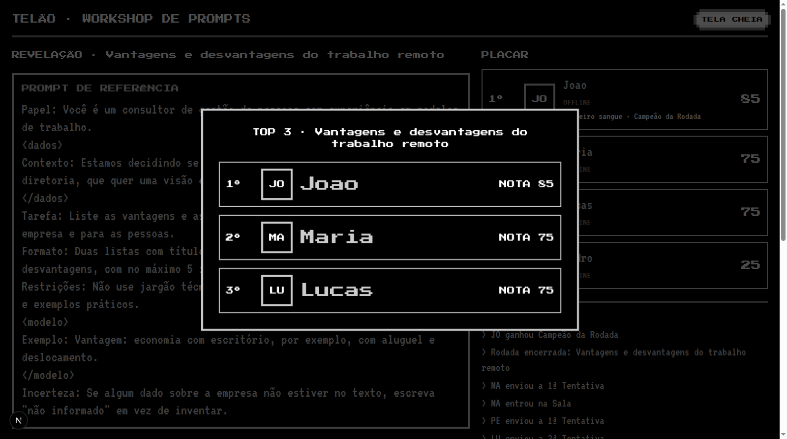
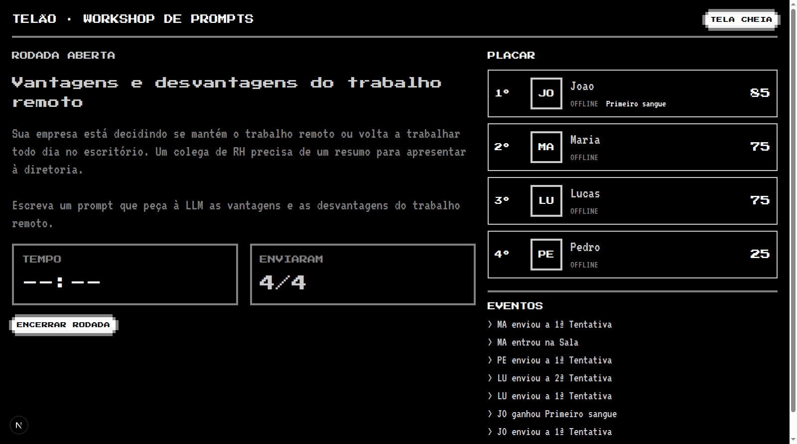
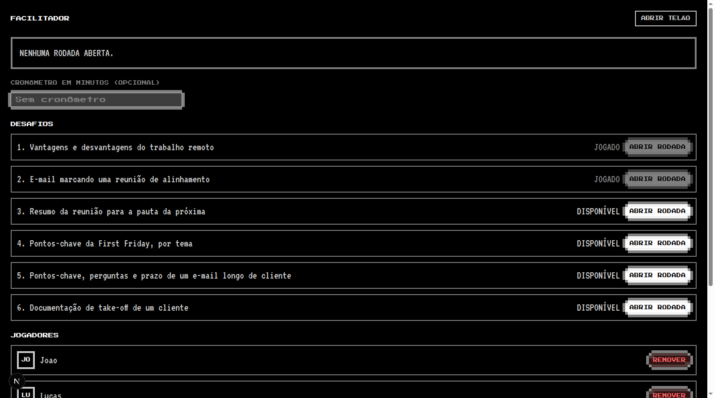

Roteiro de testes humanos · Jogo de Prompts 8-bit
Workshop de Prompts · funcionalidade descrita em .scratch/workshop-game/spec.md · publicado em /help
Notas calculadas no commit 393700e (o Avaliador não mudou depois dele) · Código revisado até o commit 67fb508 (branch main) · Revisão: 14/10/2026
1. Visão geral e papéis
O Jogo de Prompts é uma aplicação em tempo real para um workshop. Cada Jogador entra com um Nickname e escreve prompts numa janela PROMPT.EXE. O Facilitador conduz o workshop: abre Rodadas com um Desafio, encerra, remove Jogadores e projeta o Telão.
Cada Tentativa recebe uma Nota de 0 a 100 calculada sem nenhuma LLM, a partir de oito Critérios: Papel (15), Contexto (15), Tarefa (20), Formato (15), Restrições (10), Exemplos (10), Delimitadores (10) e Incerteza (5). Cada Critério vale tudo, 70% ou 30% dos seus pontos, conforme a força do sinal encontrado no prompt.
Facilitador um por workshop
Entra com PIN, abre e encerra Rodadas, vê quem já enviou, remove Jogadores, reseta a Sala e projeta o Telão.
Jogador muitos
Entra com Nickname, escreve prompts na PROMPT.EXE, lê a Nota e o checklist, consulta as dicas na DICAS.TXT, acompanha o Placar e o reveal.
2. Preparação: como rodar e como simular vários Jogadores
2.1 Subir a aplicação
pnpm install cp .env.example .env # DATABASE_URL: arquivo local (file:./data/workshop.db) ou libSQL hospedado pnpm db:deploy # aplica as migrações no arquivo local pnpm dev # Next em http://localhost:3000
Use pnpm build e depois pnpm start para um teste com a versão de produção. O banco fica no lugar indicado em DATABASE_URL e sobrevive a restarts. O PIN do Facilitador é 4321, fixo no código (lib/facilitator/session.ts); não há variável para mudá-lo.
Este roteiro fica disponível em http://localhost:3000/help. A rota lê o arquivo .scratch/workshop-game/roteiro-testes/index.html a cada acesso, então uma edição aparece sem rebuild. Ela depende de a pasta do repositório existir no servidor.
2.2 Simular vários Jogadores num único computador
O token do Jogador fica no localStorage do navegador, por endereço. Abas do mesmo endereço compartilham o mesmo Jogador. Para ter quatro Jogadores ao mesmo tempo, abra cada um num endereço diferente do mesmo servidor:
| Jogador | Endereço (exemplo com a porta 3000) |
|---|---|
| Joao | http://localhost:3000/ |
| Lucas | http://127.0.0.1:3000/ |
| Pedro | http://[::1]:3000/ |
| Maria | http://127.0.0.2:3000/ |
| Facilitador | http://localhost:3000/facilitador e o Telão em /facilitador/telao |
| Roteiro | http://localhost:3000/help |
No modo pnpm dev, o Next bloqueia recursos de desenvolvimento vindos de endereços fora de allowedDevOrigins. Se a tela ficar parada em CARREGANDO... num endereço como 127.0.0.1, esse é o motivo (veja o achado 3). A forma mais simples de evitar é usar só localhost ou rodar em produção.
Em um workshop de verdade, cada participante usa o próprio aparelho e o endereço da rede local. Esse truque serve só para o teste.
3. Manual do Facilitador
Capturas desta seção: são da execução de 13/10 (commit 4430dbe). A tela e os fluxos continuam os mesmos, mas os números nas legendas são daquela versão.
3.1 Entrar no painel Facilitador
- Abra
/facilitador. Aparece a tela do PIN (captura 03). - Digite o PIN (
4321) e clique em ENTRAR. Um PIN errado mostra "PIN incorreto." e não entra. - A sessão dura 12 horas. Reiniciar o servidor não exige o PIN de novo, porque o segredo da sessão deriva do PIN fixo.

3.2 Conhecer o painel
O painel tem, de cima para baixo: o estado da Rodada (aberta ou não, quantos já enviaram e o botão ENCERRAR RODADA); o campo de cronômetro opcional; a lista de DESAFIOS, cada um marcado como DISPONÍVEL ou JOGADO; a lista de JOGADORES com REMOVER; e a área REINICIAR A SALA.

3.3 Abrir uma Rodada Facilitador
- Se quiser cronômetro, digite os minutos no campo CRONÔMETRO EM MINUTOS (OPCIONAL). Vazio significa sem prazo. Só valem números inteiros de 1 ou mais.
- Clique em ABRIR RODADA no Desafio escolhido. Um Desafio já jogado fica com o botão desativado.
- O campo do cronômetro volta a ficar vazio: ele vale só para a Rodada que acabou de abrir.
- Cada Desafio pode ser jogado uma vez por partida. Para repetir um, é preciso resetar a Sala.
- Com uma Rodada aberta, os outros botões ABRIR RODADA ficam desativados.
Os Jogadores veem o cenário em DESAFIO.TXT assim que a Rodada abre.
3.4 Acompanhar e encerrar Facilitador
- O contador "N jogadores já enviaram" atualiza a cada envio aceito. Use isso para decidir quando encerrar.
- Clique em ENCERRAR RODADA a qualquer momento, no painel ou no Telão (veja 3.5). Ela também encerra sozinha quando o cronômetro zera. Nesse caso não é preciso fazer nada.
- Ao encerrar, todos os Jogadores veem o reveal: o Prompt de referência e o top 3 com Avatar, Nickname, Nota e prompt. Os envios ficam bloqueados.
- O reveal continua até o Facilitador abrir a próxima Rodada.
- Com o Telão aberto, quando a Rodada encerra pelo painel ou pelo cronômetro, aparece o TOP 3 no meio da tela, com efeito sonoro, por cerca de 6 segundos. Depois ele some, e o reveal continua no lado esquerdo. O som é conferido de ouvido, a captura não mostra. Se a Rodada for encerrada pelo botão do próprio Telão, a janela vai para o painel e o TOP 3 não aparece.


3.5 Projetar o Telão Facilitador
- Clique em ABRIR TELÃO no painel (abre
/facilitador/telaoem outra aba). Depois clique em TELA CHEIA. - O Telão mostra: o Desafio da Rodada aberta com o cenário, o cronômetro (TEMPO) e a contagem de envios (ENVIARAM); no lado direito, o Placar e o feed de eventos.
- Depois de encerrar, o Telão mostra o reveal com o Prompt de referência e o top 3, para discutir com a turma.
- Com a Rodada aberta, o Telão mostra o botão ENCERRAR RODADA. Clique nele para encerrar a Rodada direto do Telão. Se der certo, a janela vai para
/facilitador, pronta para o Facilitador abrir a próxima Rodada. Se der erro, a mensagem aparece em vermelho embaixo do botão e a Rodada continua aberta.


/facilitador. O Desafio 2 aparece como JOGADO e nenhuma Rodada está aberta.

3.6 Remover um Jogador Facilitador
- Na lista JOGADORES, clique em REMOVER ao lado do nome.
- O Jogador sai do Placar, as Tentativas e Conquistas dele são apagadas e o Nickname fica livre.
- A tela dele volta ao login (captura 12). Ele pode entrar de novo com o mesmo Nickname, começando do zero.

3.7 Reiniciar a Sala Facilitador
- Em REINICIAR A SALA, clique em RESETAR PARTIDA.
- Leia o aviso e confirme com SIM, APAGAR TUDO. Cancelar desfaz a ação. Não há volta.
- Tudo é apagado: Jogadores, Rodadas, Tentativas e Conquistas. Os Desafios voltam a
DISPONÍVEL, e todos os Jogadores voltam ao login.

4. Manual do Jogador
4.1 Entrar com um Nickname Jogador
- Abra o endereço do workshop. Digite um Nickname.
- Enquanto digita, o preview do Avatar mostra as duas primeiras letras, sem acento e em maiúsculo: "Élio" vira
EL; "Joao" viraJO. - Clique em ENTRAR.
Regras do Nickname: de 2 a 16 caracteres (sem contar espaços nas pontas); apenas letras (com acento), números e espaço; pelo menos 2 letras ou números. "joão" e "JOAO" são o mesmo Nickname.
| Se digitar | A mensagem é |
|---|---|
A | O Nickname precisa ter pelo menos 2 caracteres. |
| um nome com mais de 16 caracteres | O Nickname pode ter no máximo 16 caracteres. |
Ana@ | Use apenas letras, números e espaços. |
JOÃO, quando Joao já existe | Nickname já em uso |


Ao recarregar a página ou fechar e reabrir a aba no mesmo navegador, você volta automaticamente ao seu Jogador, com as Tentativas e a posição no Placar.
4.2 Área de trabalho Jogador
A área tem quatro janelas: DESAFIO.TXT (cenário), PLACAR.EXE (ranking e feed), DICAS.TXT (dicas e guia) e PROMPT.EXE (onde você escreve). Arraste pela barra de título, redimensione pela alça no canto inferior direito, minimize com _ e restaure pela barra de tarefas embaixo. Posição e tamanho ficam salvos no seu navegador.
Enquanto não há Rodada aberta, a PROMPT.EXE mostra AGUARDANDO O FACILITADOR... com o cursor piscando.
O botão SOM no topo começa desligado. Clique para ligar os efeitos 8-bit.
Atenção: no layout padrão, a PROMPT.EXE pode cobrir a DESAFIO.TXT. A altura padrão da PROMPT.EXE mudou para 300 px, e a conta sugere que ela não chega mais à DESAFIO.TXT. Isso precisa ser confirmado na tela. Se ainda cobrir, minimize a PROMPT.EXE ou arraste a DESAFIO.TXT para fora. Veja o achado 2.

DICAS.TXT.4.3 Escrever e enviar uma Tentativa Jogador
- Leia o cenário em
DESAFIO.TXT. - Escreva o prompt no campo livre da
PROMPT.EXE. Não há formulário com campos: você escreve do seu jeito. Enter quebra a linha. - Confira o contador
n/4000, o número de Tentativas restantes e o cronômetro (se houver). - Clique em ENVIAR. O botão só fica ativo com texto e dentro do limite de caracteres.
- Enquanto o servidor responde, o botão mostra ENVIANDO.... Depois de 3 s aparece "Ainda processando, aguarde...", e depois de 10 s, "Está demorando mais que o normal. Verifique sua conexão.".
- A resposta aparece na hora: TENTATIVA n · NOTA x, o veredito e o checklist de Critérios. As dicas do envio aparecem na
DICAS.TXT.
Regras que você vai notar:
- Se o servidor não responder em 30 s, o envio é liberado com "Sem resposta do servidor. Verifique sua conexão e tente de novo." e o texto fica para você reenviar. Essa Tentativa pode ou não ter sido gravada: confira o histórico antes de reenviar.
- Até 3 Tentativas por Rodada. A recusa por texto vazio ou com mais de 4.000 caracteres não gasta Tentativa.
- Depois da 3ª Tentativa, o campo fica bloqueado com "Você já usou as 3 Tentativas desta Rodada."
- Quando o Facilitador encerra a Rodada (ou o tempo acaba), o campo some e o envio fica bloqueado, mesmo que você estivesse digitando.
- Depois de um envio aceito, o campo é limpo. Depois de uma recusa, o texto fica para você corrigir.
4.4 Entender o checklist e a Nota Jogador
| Nota | Veredito |
|---|---|
| 100 | Na mosca! Prompt perfeito. Estrutura completa. |
| 80 a 99 | Quase lá. Falta pouco. Veja as dicas dos Critérios que faltaram. |
| 50 a 79 | No caminho certo. A base está boa. Acrescente o que falta. |
| abaixo de 50 | Longe do alvo. Ainda faltam partes importantes na estrutura do prompt. |
Cada Critério aparece no checklist com a marca da sua força:
- ✓: vale tudo (100% dos pontos do Critério).
- parcial: vale 70% (frase natural clara) ou 30% (menção fraca). Os pontos aparecem ao lado, e o trecho reconhecido também.
- ✕: não foi reconhecido e vale 0.
A Nota é a soma dos pontos. Um rótulo só conta quando tem pelo menos uma letra ou um número depois dele: Papel: x já vale o Critério inteiro, e Papel: sem nada não vale nada. Uma frase natural só conta quando tem pelo menos 4 palavras depois do marcador, na mesma frase.
| Critério | Pontos | Rótulo (vale tudo) | Frase natural (parcial, 70%) | Menção fraca (30%) |
|---|---|---|---|---|
| Papel | 15 | Papel:, Persona:, Role: | "Você é…", "Atue como…", "Sendo um especialista…", "You are", "as an expert" | "especialista", "consultor" |
| Contexto | 15 | Contexto:, Context: | "Estamos…", "O público é…", "For the team" | "contexto", "situação" |
| Tarefa | 20 | Tarefa:, Task: e uma Palavra-chave do Desafio | Verbo de ação (liste, escreva, resuma…) e uma Palavra-chave do Desafio. Um grupo basta. | Só o verbo, ou só a Palavra-chave |
| Formato | 15 | Formato:, Format: | "em tópicos", "tabela", "JSON", "3 itens", "no máximo 120 palavras" | "formato" |
| Restrições | 10 | Restrições:, Constraints: | "Não use…", "evite…", "apenas…", "no máximo…", "don't" | "sem" |
| Exemplos | 10 | Exemplo:, Examples: | "por exemplo", "Exemplo:", trecho entre aspas com 4 palavras | "exemplo" |
| Delimitadores | 10 | Não tem rótulo: vale com dois blocos isolados com conteúdo | Um bloco com conteúdo (uma tag <nome>…</nome>, um título ## ou um separador ---) | Uma tag ou título sem conteúdo |
| Incerteza | 5 | Não tem rótulo: vale com a condição, a ausência e a ação. Ex.: "Se o valor não estiver no texto, escreva 'não informado'." | Condição com ausência, sem ação: "se não souber", "caso faltar" | "não informado", "não encontrado" sozinhos |
Só a Tarefa usa as Palavras-chave do Desafio. Um prompt bom de outro Desafio não pontua a Tarefa.

4.5 Dicas na janela DICAS.TXT Jogador
- Dicas deste envio: uma dica por Critério parcial ou ✕ do último envio, ordenada pelos pontos perdidos (o que mais custou vem primeiro). Cada dica tem um link para a documentação da Anthropic sobre prompts. A dica de Incerteza cita o Guia do workshop, porque a documentação oficial não recomenda essa instrução.
- Guia de um bom prompt: sempre visível, com uma linha para cada um dos oito Critérios. Serve para aprender entre as Tentativas.
4.6 Histórico, Placar e Conquistas Jogador
- O histórico da Rodada lista suas Tentativas com prompt e Nota, para você comparar versões.
- O PLACAR.EXE mostra todos os Jogadores com posição, Avatar, Nickname, pontuação total,
ONLINE/OFFLINE,ENVIOU,TENT. n/3e as Conquistas. - A pontuação total é a soma, por Rodada, da melhor Nota. Só suas melhores Tentativas contam. Empate: menos Tentativas usadas nas Rodadas em que pontuou e, depois, quem atingiu a pontuação antes.
- O feed de EVENTOS mostra o que acontece na Sala, sem texto de prompt: "JO tirou 100!", "MA enviou a 2ª Tentativa", "PE ganhou Primeiro sangue".
- LEVEL UP! aparece quando sua Nota melhora na Rodada ou quando você sobe no Placar.
| Conquista | Como ganhar |
|---|---|
| Na mosca | Tirar 100 em uma Tentativa. |
| De primeira | Tirar 100 já na 1ª Tentativa da Rodada. |
| Primeiro sangue | Ser o primeiro envio aceito da Rodada. |
| Evolução | Uma Tentativa sua fica pelo menos 30 pontos acima da sua 1ª Tentativa da Rodada. |
| Campeão da Rodada | Ficar em 1º lugar da Rodada com Nota acima de zero, quando o Facilitador encerra. |

4.7 Revelação no fim da Rodada Jogador
Quando a Rodada encerra, sua PROMPT.EXE mostra o REVELAÇÃO: o Prompt de referência do Desafio e o top 3, com Avatar, Nickname, Nota e prompt de cada um. Esse reveal fica até o Facilitador abrir a próxima Rodada. O TOP 3 do overlay central e o efeito sonoro (seção 3.4) aparecem só no Telão, não na janela do Jogador.

5. Roteiro de execução: seis Rodadas, quatro Jogadores
Este é o roteiro a executar. Um testador repete a sequência com Joao, Lucas, Pedro e Maria e compara as Notas com a tabela. A ordem importa: o Primeiro sangue, o desempate e a Evolução dependem dela.
Como as Notas foram calculadas. Cada prompt desta seção foi passado pelo Avaliador do commit 393700e, com as mesmas funções que o motor usa, e o Placar foi somado com as regras de desempate do motor. Isso confere os números, mas não substitui o teste no navegador (seção 7). Os textos abaixo são os que devem ser digitados. Os textos com quebra de linha usam Enter na PROMPT.EXE.
Pa/Co/Ta/Fo/Re/Ex/De/In (Papel, Contexto, Tarefa, Formato, Restrições, Exemplos, Delimitadores, Incerteza). A coluna Observação diz quais Critérios ficaram parciais ou fracos.
Rodada 1 · Desafio 1 · Vantagens e desvantagens do trabalho remoto (sem cronômetro)
| # | Jogador | Prompt (texto para copiar) | Nota esperada | Pa/Co/Ta/Fo/Re/Ex/De/In | Observação |
|---|---|---|---|---|---|
| 1 | Joao | (enviar em branco; ENVIAR deve ficar desativado) | — | — | não consome Tentativa |
| 2 | Joao | Liste as vantagens e desvantagens do trabalho remoto. | 14 | 0 0 14 0 0 0 0 0 | Tarefa parcial: verbo e Palavra-chave, sem rótulo |
| 3 | Pedro | Escreva um texto sobre home office. | 14 | 0 0 14 0 0 0 0 0 | Tarefa parcial: um grupo de Palavras-chave ("home office") basta |
| 4 | Maria | Papel: . Contexto: . Tarefa: . Formato: . Restrições: . Exemplo: . | 0 | 0 0 0 0 0 0 0 0 | rótulos sem conteúdo não pontuam |
| 5 | Lucas | Papel: Você é um consultor de RH experiente. Contexto: Estamos decidindo o modelo de trabalho. Tarefa: liste as vantagens e desvantagens do trabalho remoto. | 50 | 15 15 20 0 0 0 0 0 | Papel, Contexto e Tarefa cheios; sem Formato |
| 6 | Pedro | Liste as vantagens e as desvantagens do trabalho remoto em tópicos. | 25 | 0 0 14 11 0 0 0 0 | Tarefa parcial; Formato parcial ("em tópicos" como frase natural) |
| 7 | Lucas | Papel: Você é um consultor de RH experiente. Contexto: Estamos decidindo o modelo de trabalho. Tarefa: liste as vantagens e desvantagens do trabalho remoto. Formato: lista com 2 títulos, no máximo 5 itens cada. Restrições: não use jargão técnico. | 75 | 15 15 20 15 10 0 0 0 | sem Exemplos, Delimitadores e Incerteza |
| 8 | Joao | Papel: Você é um consultor de gestão de pessoas com experiência em modelos de trabalho. Contexto: Estamos decidindo se mantemos o trabalho remoto. O público é a diretoria. Tarefa: Liste as vantagens e as desvantagens do trabalho remoto para a empresa e para as pessoas. Formato: Duas listas com títulos, com no máximo 5 itens cada. Restrições: Evite opiniões pessoais e jargão técnico. Exemplo: Vantagem: economia com aluguel, por exemplo, com deslocamento. | 85 | 15 15 20 15 10 10 0 0 | "Quase lá". Faltam Delimitadores (10) e Incerteza (5): as duas dicas aparecem em DICAS.TXT |
| 9 | Maria | You are an experienced HR consultant. Context: we are deciding on remote work. Task: list the advantages and disadvantages of remote work. Format: two bulleted lists with short items. Don't use technical jargon in the answer. For example, a bullet: pro, lower rent. | 75 | 11 15 20 15 7 7 0 0 | Papel, Restrições e Exemplos parciais (frases em inglês sem rótulo) |
| 10 | Pedro | Liste as vantagens e desvantagens do trabalho remoto. | 14 | 0 0 14 0 0 0 0 0 | 3ª Tentativa. A melhor do Pedro continua 25 |
| 11 | Pedro | (4ª Tentativa, qualquer texto) | recusado | — | "Você já usou as 3 Tentativas desta Rodada." |
Ao encerrar a Rodada 1: Campeão da Rodada: Joao (85). Top 3 do reveal: Joao 85, Lucas 75, Maria 75. Lucas e Maria empatam em 75 com 2 Tentativas cada, e Lucas chegou antes. Depois de encerrada, o envio de qualquer Jogador deve ser recusado com "A Rodada foi encerrada.", e o Desafio 1 não pode ser reaberto: "Este Desafio já foi jogado nesta Sala."
Rodada 2 · Desafio 2 · E-mail marcando uma reunião de alinhamento (sem cronômetro)
| # | Jogador | Prompt (texto para copiar) | Nota esperada | Pa/Co/Ta/Fo/Re/Ex/De/In | Observação |
|---|---|---|---|---|---|
| 1 | Maria | Escreva um e-mail para a equipe marcando uma reunião de alinhamento com data e participantes. | 25 | 0 11 14 0 0 0 0 0 | Contexto parcial ("para a equipe"); Tarefa parcial. Primeiro sangue |
| 2 | Pedro | Escreva um texto curto. | 6 | 0 0 6 0 0 0 0 0 | Tarefa fraca: verbo sem Palavra-chave |
| 3 | Joao | Escreva um e-mail sobre a reunião. | 14 | 0 0 14 0 0 0 0 0 | Tarefa parcial |
| 4 | Lucas | Escreva um e-mail marcando uma reunião de alinhamento. | 14 | 0 0 14 0 0 0 0 0 | Tarefa parcial |
| 5 | Maria | Papel: Você é uma assistente de comunicação de projetos. Contexto: Precisamos alinhar o escopo da entrega. Tarefa: Escreva um e-mail marcando uma reunião de alinhamento com data e participantes. Formato: Assunto na primeira linha e corpo em tópicos curtos. Restrições: Não invente datas e evite tom informal. Exemplo: Assunto: Alinhamento, por exemplo, reunião na terça às 14h. | 85 | 15 15 20 15 10 10 0 0 | "Quase lá". Faltam Delimitadores e Incerteza |
| 6 | Pedro | Escreva um e-mail marcando uma reunião de alinhamento. | 14 | 0 0 14 0 0 0 0 0 | Tarefa parcial. Sem Evolução (14 < 6 + 30) |
| 7 | Lucas | Papel: Você é um coordenador de projetos. Tarefa: escreva um e-mail marcando uma reunião de alinhamento com data e participantes. | 35 | 15 0 20 0 0 0 0 0 | Papel e Tarefa cheios (com rótulo). Sem Evolução (35 < 14 + 30) |
| 8 | Joao | Escreva um e-mail para o time marcando uma reunião de alinhamento com data e participantes. | 25 | 0 11 14 0 0 0 0 0 | Contexto parcial ("para o time"); Tarefa parcial. Sem Evolução (25 < 14 + 30) |
| 9 | Lucas | Escreva um e-mail marcando uma reunião de alinhamento com data, horário e participantes, em no máximo 80 palavras. | 32 | 0 0 14 11 7 0 0 0 | Tarefa, Formato e Restrições parciais |
| 10 | Maria | Papel: Você é uma assistente de comunicação de projetos. Contexto: Precisamos alinhar o escopo da entrega. Tarefa: Escreva um e-mail marcando uma reunião de alinhamento com data e participantes. Formato: Assunto na primeira linha e corpo em tópicos curtos. Restrições: Não invente datas e evite tom informal. Exemplo: Assunto: Alinhamento, por exemplo, reunião na terça às 14h. ## Dados Se a data não estiver informada, escreva 'data a definir'. | 100 | 15 15 20 15 10 10 10 5 | "Na mosca!". Delimitadores (dois blocos: o texto e ## Dados) e Incerteza (condição, ausência e ação). Evolução (100 ≥ 25 + 30) |
No envio 10, digite a linha ## Dados sozinha, com Enter antes e depois dela. Sem as quebras de linha, o título não conta como bloco.
Ao encerrar a Rodada 2: Top 3 do reveal: Maria 100, Lucas 35, Joao 25. Campeão da Rodada: Maria. Primeiro sangue: Maria (envio 1).
Rodada 3 · Desafio 3 · Resumo da reunião (cronômetro de 1 minuto)
| # | Jogador | Prompt (texto para copiar) | Nota esperada | Pa/Co/Ta/Fo/Re/Ex/De/In | Observação |
|---|---|---|---|---|---|
| 1 | Pedro | Resuma as anotações da reunião em decisões, pendências e responsáveis, e transforme em pauta. | 14 | 0 0 14 0 0 0 0 0 | Tarefa parcial. Primeiro sangue |
| 2 | Maria | Atue como um secretário de reuniões. Contexto: as anotações abaixo são de uma reunião de projeto. Formato: lista com três títulos, Decisões, Pendências e Pauta, com no máximo 5 itens. | 54 | 11 15 6 15 7 0 0 0 | Papel parcial; Tarefa fraca (só a Palavra-chave, sem verbo de ação); Restrições parcial ("no máximo") |
| 3 | Lucas | Escreva um resumo da reunião. | 14 | 0 0 14 0 0 0 0 0 | Tarefa parcial |
| 4 | Joao | Crie um resumo das anotações. | 14 | 0 0 14 0 0 0 0 0 | Tarefa parcial |
Cronômetro: o campo mostra TEMPO: 00:55 logo depois da abertura. Sem envio depois do zero, a Rodada deve encerrar sozinha. Um envio do Joao depois disso deve ser recusado com "A Rodada foi encerrada."
Ao encerrar a Rodada 3: Campeão da Rodada: Maria (54). Top 3 do reveal: Maria 54, Pedro 14, Lucas 14. Pedro e Lucas empatam em 14, e Pedro chegou antes. Joao também tem 14 e fica em 4º.
Rodada 4 · Desafio 4 · Pontos-chave da First Friday, por tema (sem cronômetro)
| # | Jogador | Prompt (texto para copiar) | Nota esperada | Pa/Co/Ta/Fo/Re/Ex/De/In | Observação |
|---|---|---|---|---|---|
| 1 | Lucas | Liste os pontos-chave da First Friday, por tema. | 14 | 0 0 14 0 0 0 0 0 | Tarefa parcial: verbo e Palavra-chave, sem rótulo. Primeiro sangue |
| 2 | Pedro | Resuma o encontro. | 6 | 0 0 6 0 0 0 0 0 | Tarefa fraca: verbo sem Palavra-chave ("encontro" sozinho não é Palavra-chave; "encontro mensal" é) |
| 3 | Joao | Papel: Você é um analista de comunicação interna. Contexto: Os colaboradores não estiveram no encontro. Tarefa: Liste os pontos-chave da First Friday por tema. Formato: um título por tema e até 3 tópicos curtos. Restrições: Não invente números. Exemplo: Suporte: 197 tickets em setembro, por exemplo. | 85 | 15 15 20 15 10 10 0 0 | "Quase lá". Faltam Delimitadores (10) e Incerteza (5) |
| 4 | Maria | Papel: . Contexto: . Tarefa: . Formato: . Restrições: . Exemplo: . | 0 | 0 0 0 0 0 0 0 0 | rótulos sem conteúdo não pontuam |
| 5 | Lucas | Papel: Você é um analista de comunicação interna. Contexto: Os colaboradores não estiveram no encontro mensal. Tarefa: Liste os pontos-chave da First Friday por tema, com datas e números. Formato: um título por tema e até 3 tópicos curtos. Restrições: Não invente números nem nomes. Exemplo: Suporte: 197 tickets em setembro, por exemplo. Incerteza: Se uma informação não estiver nas anotações, escreva 'não informado'. | 90 | 15 15 20 15 10 10 0 5 | "Quase lá". Faltam Delimitadores (10). Incerteza cheia. Evolução (90 ≥ 14 + 30) |
| 6 | Maria | Papel: Você é um analista de comunicação interna, experiente em resumir encontros. <dados> Contexto: As anotações abaixo são de um encontro mensal da empresa. O público são colaboradores que não estiveram na reunião. </dados> Tarefa: Liste os pontos-chave do encontro, organizados por tema, com as datas e os números citados nas anotações. Formato: Um título por tema e, em cada um, até 3 tópicos curtos. Restrições: Não invente números, datas nem nomes; não inclua opiniões sobre os temas. <modelo> Exemplo: Suporte: 197 tickets recebidos em setembro, por exemplo, com tempo médio de 11,1 dias. </modelo> Incerteza: Se uma informação não estiver nas anotações, escreva "não informado" no lugar dela. | 100 | 15 15 20 15 10 10 10 5 | "Na mosca!". Dois blocos (dados e modelo) dão Delimitadores cheios. Evolução (100 ≥ 0 + 30) |
No envio 6, use Enter entre as linhas e digite as tags <dados> e <modelo> como estão.
Ao encerrar a Rodada 4: Campeão da Rodada: Maria (100). Top 3 do reveal: Maria 100, Lucas 90, Joao 85. Primeiro sangue: Lucas (envio 1). Conquistas: Evolução (Lucas, 90 sobre 14; Maria, 100 sobre 0) e Na mosca (Maria).
Rodada 5 · Desafio 5 · Pontos-chave de um e-mail de cliente (sem cronômetro)
| # | Jogador | Prompt (texto para copiar) | Nota esperada | Pa/Co/Ta/Fo/Re/Ex/De/In | Observação |
|---|---|---|---|---|---|
| 1 | Pedro | (enviar em branco, depois um texto de mais de 4.000 caracteres) | recusado | — | não consome Tentativa |
| 2 | Pedro | Extraia os pontos-chave, as perguntas e o prazo do e-mail do cliente, em tópicos. | 25 | 0 0 14 11 0 0 0 0 | Tarefa parcial; Formato parcial. Primeiro sangue e Campeão da Rodada |
Presença: feche a aba do Lucas e espere cerca de 10 s (o Jogador conta como ONLINE enquanto o último poll de 2 s tiver chegado nesse intervalo). Ele deve aparecer como OFFLINE no Placar, com os 214 pontos. Ao voltar, deve aparecer ONLINE de novo. A regra mudou com o polling, então esse passo precisa ser repetido.
Rodada 6 · Desafio 6 · Documentação de take-off de um cliente (sem cronômetro)
| # | Jogador | Prompt (texto para copiar) | Nota esperada | Pa/Co/Ta/Fo/Re/Ex/De/In | Observação |
|---|---|---|---|---|---|
| 1 | Pedro | Escreva um texto sobre o take-off. | 14 | 0 0 14 0 0 0 0 0 | Tarefa parcial: verbo e Palavra-chave, sem rótulo. Primeiro sangue |
| 2 | Lucas | Papel: Você é um gerente de operações. Contexto: Documento o take-off para a equipe de Operações. Tarefa: Escreva a documentação do take-off do Cliente A. Formato: título, resumo e tópicos curtos. | 65 | 15 15 20 15 0 0 0 0 | Papel, Contexto, Tarefa e Formato cheios. Sem Restrições, Exemplos, Delimitadores e Incerteza |
| 3 | Joao | Papel: Você é um gerente de operações. Contexto: Documento o take-off para a equipe de Operações. Tarefa: Escreva a documentação do take-off do Cliente A, com resumo e uma seção por etapa. Formato: título, resumo e tópicos curtos. Restrições: Não invente datas nem responsáveis. Exemplo: Etapa kick-off: alinhamento de escopo, por exemplo, na primeira interação. | 85 | 15 15 20 15 10 10 0 0 | "Quase lá". Faltam Delimitadores (10) e Incerteza (5) |
| 4 | Maria | Escreva a documentação do take-off. | 14 | 0 0 14 0 0 0 0 0 | Tarefa parcial. Primeiro envio da Maria na Rodada. O envio 5 vem a seguir e dá Evolução |
| 5 | Maria | Papel: Você é um gerente de operações de implantação, responsável por documentar take-offs. <dados> Contexto: As anotações abaixo são do take-off de um cliente. O público é a equipe de Operações e a área comercial. </dados> Tarefa: Documente o take-off do Cliente A, com um resumo, uma seção para cada etapa e uma seção de próximos passos e cronograma. Formato: Título, resumo em até 3 frases e, em cada seção, tópicos curtos. Restrições: Não invente datas, responsáveis nem valores; use somente o que está nas anotações. <modelo> Exemplo: Etapa kick-off: alinhamento de escopo e expectativas com o cliente, por exemplo, na primeira interação. </modelo> Incerteza: Se o cronograma ou os próximos passos não estiverem nas anotações, escreva "não informado" no lugar deles. | 100 | 15 15 20 15 10 10 10 5 | "Na mosca!". Delimitadores e Incerteza cheios. Evolução (100 ≥ 14 + 30) |
No envio 5, use Enter entre as linhas, como no Desafio 4.
Ao encerrar a Rodada 6: Campeão da Rodada: Maria (100). Top 3 do reveal: Maria 100, Joao 85, Lucas 65. Primeiro sangue: Pedro (envio 1). Conquistas: Evolução e Na mosca (Maria).
Moderação e reset
- Remova o Pedro pelo painel. Ele deve sair do Placar e voltar ao login (captura 12).
- Entre de novo com
Pedro: o Nickname está livre. O novo Pedro começa com 0 pontos e sem Conquistas. - Resete a Sala (captura 13). Os seis Desafios voltam a
DISPONÍVEL, e todos os Jogadores voltam ao login.
Placar esperado ao longo do workshop
| Depois de | 1º | 2º | 3º | 4º |
|---|---|---|---|---|
| Rodada 1 | Joao 85 | Lucas 75 | Maria 75 | Pedro 25 |
| Rodada 2 | Maria 175 | Joao 110 | Lucas 110 | Pedro 39 |
| Rodada 3 | Maria 229 | Joao 124 | Lucas 124 | Pedro 53 |
| Rodada 4 | Maria 329 | Lucas 214 | Joao 209 | Pedro 59 |
| Rodada 5 | Maria 329 | Lucas 214 | Joao 209 | Pedro 84 |
| Rodada 6 | Maria 429 | Joao 294 | Lucas 279 | Pedro 98 |
Empates que o roteiro testa:
- Depois da Rodada 1, Lucas e Maria, 75: mesmo número de Tentativas (2 cada). Lucas fica em 2º porque chegou ao 75 antes.
- Depois da Rodada 2, Joao e Lucas, 110: Joao usou 4 Tentativas nas Rodadas em que pontuou, e Lucas usou 5. Joao fica em 2º pelo desempate por Tentativas, e não pelo horário.
Conquistas esperadas por Rodada
| Rodada | Conquistas que devem aparecer |
|---|---|
| 1 | Primeiro sangue (Joao) · Evolução (Joao, 85 sobre 14; Maria, 75 sobre 0) · Campeão da Rodada (Joao) |
| 2 | Primeiro sangue (Maria) · Na mosca (Maria, 100) · Evolução (Maria) · Campeão da Rodada (Maria) |
| 3 | Primeiro sangue (Pedro) · Campeão da Rodada (Maria, 54) |
| 4 | Primeiro sangue (Lucas) · Evolução (Lucas, 90 sobre 14; Maria, 100 sobre 0) · Na mosca (Maria, 100) · Campeão da Rodada (Maria) |
| 5 | Primeiro sangue (Pedro) · Campeão da Rodada (Pedro) |
| 6 | Primeiro sangue (Pedro) · Evolução (Maria, 100 sobre 14) · Na mosca (Maria, 100) · Campeão da Rodada (Maria) |
Ninguém tira 100 na 1ª Tentativa, então De primeira não aparece. Essa ausência é esperada.
6. Checklist para o testador humano
Marque cada item. Os números entre parênteses são as histórias da spec (spec.md).
Login e identidade (histórias 1 a 8)
- Entrar só com Nickname, sem senha (1).
- A tela explica que o Avatar usa as duas primeiras letras (2).
- O preview do Avatar muda enquanto digito (3).
- Nickname em uso mostra mensagem clara (4).
- Nickname curto, longo ou com caractere inválido mostra a regra certa (5).
- "joão" e "JOAO" são o mesmo Nickname (6).
- Recarregar a página ou reabrir a aba volta ao mesmo Jogador (7).
- "Élio" vira o Avatar
EL(8).
Área de trabalho e Janela (histórias 9 a 16)
- As quatro janelas
PROMPT.EXE,DESAFIO.TXT,DICAS.TXTePLACAR.EXEaparecem (9). - Arrastar, minimizar e restaurar pela barra de tarefas funciona (10).
- A posição das janelas sobrevive a um reload (11).
- Sem Rodada aberta,
AGUARDANDO O FACILITADOR...com cursor piscando (13). - Ao abrir a Rodada,
DESAFIO.TXTmostra o cenário (14). Achado 2: confira se você consegue ler sem arrastar. - Contador de Tentativas restantes atualiza (15).
- Cronômetro aparece quando a Rodada tem prazo (16).
Tentativas e Avaliação (histórias 17 a 30)
- Campo de texto livre, sem formulário (17). Enter quebra a linha.
- Nota aparece na hora, de 0 a 100, com veredito (18, 19).
- Checklist com ✓, parcial ou ✕ e pontos por Critério, com oito linhas (20).
- Pontos parciais: uma frase natural dá 70% e uma menção fraca dá 30% (20). Ex.: Tarefa 14 e 6 nos envios da Rodada 2.
- Dica para cada Critério parcial ou não atendido, em
DICAS.TXT(21). A ordem vai do que mais custou para o que menos custou. - Trecho reconhecido para cada Critério atendido (22).
- Envio que demora: "Ainda processando, aguarde..." aos 3 s e "Está demorando mais que o normal..." aos 10 s. Só pode ser visto com a rede lenta (ex.: DevTools, throttling). Texto digitado durante a espera fica no campo.
- Envio sem resposta em 30 s libera o campo com "Sem resposta do servidor..." (simular com o servidor parado no meio do envio).
- Rótulo (
Papel:,## Contexto) e frase natural ("Atue como…") são reconhecidos (23). - Prompt em inglês é reconhecido (24, caso "Maria 2" da Rodada 1, com 75 pontos).
- Rótulo sem conteúdo não pontua (25, caso "Maria 1" da Rodada 1, com 0).
- Prompt bom de outro Desafio não pontua a Tarefa (26).
- Histórico da Rodada mostra prompt e Nota de cada Tentativa (27).
- Prompt vazio é recusado, sem gastar Tentativa, e o motivo aparece (28).
- Na 4ª Tentativa o envio fica bloqueado com o motivo (29).
- Depois do encerramento, o envio fica bloqueado, mesmo digitando (30).
Critérios novos: Delimitadores e Incerteza (histórias 68 a 70)
- Dois blocos isolados (texto e título
## Dados) dão os 10 pontos de Delimitadores. Envio 10 da Rodada 2. - Um só bloco, ou uma tag sem conteúdo, dá Delimitadores parcial (7 pontos) ou fraco (3 pontos).
- Condição com ausência e ação ("Se a data não estiver informada, escreva…") dá os 5 pontos de Incerteza. Envio 10 da Rodada 2.
- Condição sem ação ("se não souber") dá Incerteza parcial (4 pontos, 70% de 5 arredondado). Digite um prompt com só essa frase para conferir.
DICAS.TXTmostra "Dicas deste envio" com as dicas de Delimitadores e Incerteza no envio 8 da Rodada 1 (Joao, 85).- O "Guia de um bom prompt" mostra as oito linhas, sempre (69, 70).
Mudanças desde 393700e (janelas, Facilitador, PIN)
- Cada janela tem alça no canto inferior direito; redimensionar funciona e o conteúdo rola quando a janela fica pequena (4.2).
- Tamanho e posição das janelas sobrevivem a um reload (4.2).
- Facilitador com o painel aberto: um Jogador que entra aparece na hora na lista de JOGADORES, e a lista atualiza quando um Jogador sai, sem recarregar a página (3.2, 3.6).
- PIN
4321abre o painel; reiniciar o servidor não pede o PIN de novo (3.1). Teste reiniciando o processo de propósito.
Placar e eventos (histórias 31 a 39)
- Placar mostra Avatar, Nickname e total, ordenado (31).
- Placar atualiza ao vivo quando alguém envia (32).
- Só a melhor Tentativa da Rodada conta (33). Ex.: Pedro na Rodada 1 tem 14, 25 e 14; conta 25.
- Total é a soma das melhores Notas de cada Rodada (34). Ex.: Maria tem 229 = 75 + 100 + 54.
- Empate de 75 entre Lucas e Maria na Rodada 1: Lucas fica em 2º por ter chegado antes (35).
- Empate de 110 entre Joao e Lucas depois da Rodada 2: Joao fica em 2º por ter usado menos Tentativas (35).
- Status ONLINE/OFFLINE, ENVIOU e tentativas usadas aparecem (36).
- Quem fica OFFLINE continua com os pontos (37).
- Feed de eventos sem texto de prompt (38, 39).
Conquistas e feedback (histórias 40 a 48)
- Na mosca aparece quando tira 100 (40). Maria, Rodada 2, envio 10.
- De primeira: nenhum Jogador a ganha no roteiro, porque ninguém tirou 100 na 1ª Tentativa. Verifique se ela não aparece (41).
- Primeiro sangue vai para o primeiro envio aceito da Rodada (42). Ex.: Joao na Rodada 1, Maria na Rodada 2.
- Evolução aparece com +30 e não aparece com +29 ou menos (43). Ex.: Joao na Rodada 1, 85 sobre 14 (+71). Lucas na Rodada 1, 75 sobre 50 (+25), não aparece.
- Campeão da Rodada vai para o 1º lugar ao encerrar (44).
- Conquistas aparecem no Placar para todos (45).
- LEVEL UP aparece quando a Nota melhora ou quando você sobe no Placar (46).
- O botão SOM começa desligado e liga os efeitos (47, 48).
Fim da Rodada e aprendizado (histórias 49 a 51)
- Reveal mostra o Prompt de referência (49).
- Reveal mostra o top 3 com Avatar, Nickname, Nota e prompt (50).
- O reveal continua até o Facilitador abrir a próxima Rodada (51).
- Com o Telão aberto, encerrar a Rodada pelo painel mostra o TOP 3 no meio da tela, com efeito sonoro, por cerca de 6 segundos (novo nesta revisão; o som é conferido de ouvido).
- O TOP 3 do overlay não aparece na janela do Jogador (novo nesta revisão).
Facilitador (histórias 52 a 64)
- PIN incorreto é recusado; PIN certo abre o painel (52).
- O Facilitador não aparece no Placar (53).
- Desafios mostram
JOGADOouDISPONÍVEL(54). - Abrir a Rodada libera o cenário para todos ao mesmo tempo (55).
- Cronômetro é opcional e vale só para a Rodada aberta (56).
- A Rodada encerra sozinha quando o cronômetro zera (57).
- ENCERRAR RODADA encerra a qualquer momento (58).
- O contador "N jogadores já enviaram" está certo (59).
- REMOVER tira o Jogador do Placar, libera o Nickname e leva o Jogador ao login (60).
- RESETAR pede confirmação e apaga tudo (61).
- O Telão mostra Placar grande, cronômetro, envios e feed (62).
- O Telão mostra o reveal ao encerrar (63).
- ENCERRAR RODADA no Telão encerra a Rodada e leva a janela para
/facilitador, pronta para abrir a próxima. Com erro, a mensagem aparece e a Rodada continua aberta (novo nesta revisão). - Reiniciar o servidor no meio da Rodada mantém os Jogadores, as Tentativas e o Placar (64). Não coberto por este roteiro: teste reiniciando o processo de propósito.
Desafios (histórias 65 e 66)
- Os seis Desafios aparecem, em ordem de dificuldade (65).
- Os textos podem ser revisados no arquivo do seed
lib/challenges/seed.ts(66). Não testado aqui: é uma edição de arquivo, não uma tela.
7. Resultados e estado da verificação
| Etapa | Como foi feita | Resultado |
|---|---|---|
| Suíte automatizada (Vitest) | pnpm test sobre o commit 393700e | 239 de 239 testes passaram (7 arquivos), em 14/10/2026 |
| Notas e Placar esperados desta revisão | Script temporário que chama evaluate() e as funções de pontuação e Conquistas do motor sobre os textos da seção 5 | Calculados. Os números da seção 5 vêm dessa conta. Não é uma execução de tela. |
Cenário automatizado (verificacao/cenario-verificacao.cjs) | Não repetido nesta revisão | Pendente. O script tem os valores da versão 4430dbe e vai falhar nas Notas. Veja o apêndice. |
| Roteiro pelo navegador (quatro Jogadores + Facilitador + Telão) | Não repetido nesta revisão | Pendente. Os resultados abaixo são da execução de 13/10, no commit 4430dbe. |
| Telão: ENCERRAR RODADA e TOP 3 no meio da tela | Chrome DevTools em 14/10, com dados semeados pela API (Rodadas 1 e 2) | Funcionou: o botão encerra a Rodada e leva ao painel, e o encerramento pelo painel mostra o TOP 3 no Telão (capturas 12 a 14). Som não verificado. |
Execução de 13/10 (commit 4430dbe): resultados históricos
Esta tabela e as capturas são da versão anterior. Com seis Critérios e pontuação tudo ou nada, as Notas batiam com o roteiro antigo. Elas não valem como prova da versão atual.
| Rodada | Jogador | Tentativas (Notas, em ordem) | Observado |
|---|---|---|---|
| 1 | Joao | 20, 100 | igual ao esperado da versão anterior |
| 1 | Lucas | 55, 90 | igual; LEVEL UP "NOTA MELHOROU!" |
| 1 | Pedro | 0, 40, 20 (4ª recusada) | igual; campo bloqueado com o motivo |
| 1 | Maria | 0, 100 | igual (inglês reconhecido) |
| 2 | Maria | 40, 100 | igual; LEVEL UP |
| 2 | Pedro | 0, 20 | igual |
| 2 | Joao | 20, 40 | igual |
| 2 | Lucas | 20, 35, 55 | igual; LEVEL UP na 3ª |
| 3 | Pedro / Maria / Lucas / Joao | 20 / 70 / 0 / 20 | igual; TEMPO 00:55 no início; encerrou sozinha; envio tardio recusado |
| 4 | Lucas / Joao | 40 / 90 | igual |
| 5 | Pedro | 40 | igual; vazio recusado antes |

8. Achados e observações
Estes pontos não quebram a spec. São riscos para o workshop real. Nenhum foi corrigido nesta revisão.
Achado 1 · Plural não é reconhecido pelo Critério Tarefa
O que acontece: a Palavra-chave é procurada na forma exata. "e-mail" não bate com "e-mails", e "reunião" não bate com "reuniões". Verificado com o Avaliador do commit 393700e:
"Escreva um e-mail marcando uma reunião." → Tarefa 14 (parcial) "Escreva e-mails marcando reuniões." → Tarefa 6 (fraca) · nota 6
Impacto: quem escreve no plural perde 8 pontos de Tarefa, e a Nota cai de 14 para 6. Se o texto não tiver nenhum outro termo do Desafio, o prompt bom perde a parte que mais pesa.
Sugestão: aceitar as formas plurais das Palavras-chave no Critério Tarefa, ou listar as formas plurais no seed de cada Desafio. Não corrigido nesta revisão.
Achado 2 · DESAFIO.TXT pode ficar escondido atrás da PROMPT.EXE no layout padrão
O que acontece: a posição padrão da DESAFIO.TXT é x=32, y=360 (lib/client/windows.ts), e a PROMPT.EXE começa em x=32, y=32 e é alta o bastante para cobrir essa posição. Na captura 05 (janela do Lucas, versão anterior), não há sinal da DESAFIO.TXT na tela. Ela só aparece na barra de tarefas. A DICAS.TXT entrou no layout com posição padrão x=640, y=360, do lado direito. A mudança do layout não foi conferida na tela nesta revisão.
Situação em 67fb508: a posição padrão não mudou (x=32, y=360), mas a PROMPT.EXE agora tem 300 px de altura (termina em y=332), então, pelo código, não cobre mais a DESAFIO.TXT. Não confirmado na tela. Veja o item 2 da seção 6.
Impacto: o Jogador pode não ver o cenário (história 14), e o Desafio fica "invisível" no primeiro uso. O Jogador precisa descobrir que deve minimizar a PROMPT.EXE ou arrastar a outra janela.
Sugestão: posicionar a DESAFIO.TXT num lugar que não fique sob a PROMPT.EXE no layout padrão, ou destacar a DESAFIO.TXT quando uma Rodada abre.
Achado 3 · pnpm dev trava em CARREGANDO... em outros endereços
O que acontece: next.config.ts não define allowedDevOrigins (conferido no commit 393700e). Quando a página é aberta por 127.0.0.1, [::1] ou um IP da rede, o Next bloqueia os recursos de desenvolvimento (/_next/hmr, fontes). O JavaScript não hidrata e a tela fica em CARREGANDO... para sempre. O log do servidor mostra: "Blocked cross-origin request to Next.js dev resource /_next/hmr from ...". Só localhost funcionava sem configuração.
Impacto: quem tentar testar pela rede do workshop em modo de desenvolvimento vê a aplicação travada, sem mensagem na tela.
Sugestão: acrescentar o IP ou o nome da máquina do workshop em allowedDevOrigins, ou usar pnpm start no dia do workshop.
Achado 4 · Abas do mesmo navegador são o mesmo Jogador
Isso é o comportamento desejado (história 7), mas confunde quem testa. Se duas abas do mesmo endereço entram com Nicknames diferentes, a segunda sobrescreve o token da primeira. Use endereços diferentes ou perfis de navegador separados, como no item 2.2.
Achado 5 · Rótulo com uma letra já pontua (decisão da spec)
O que acontece: pela regra de 14/10, "Papel: x" vale os 15 pontos de Papel. Antes da revisão, o mesmo texto valia 0. Teste com o Avaliador: "Papel: x. Contexto: x. Tarefa: x. Formato: x. Restrições: x. Exemplo: x." dá 71 pontos.
Impacto: um Jogador pode ganhar pontos com rótulos sem sentido. O roteiro usa rótulos vazios (Papel: .) para o caso "sem conteúdo".
Sugestão: decidir se o workshop quer exigir uma palavra com sentido, e não só uma letra. Se sim, é mudança da regra de Rótulo na spec, não do código.
Achado 6 · Banco local criado antes de uma migração não recebe a tabela nova
O que acontece: applyMigrationsIfNeeded (lib/engine/migrations.ts) só aplica as migrações quando a tabela Jogador não existe. Um data/workshop.db criado antes da migração 20261014120000_polling_feed não ganha a tabela EventoFeed. Então /api/facilitator/poll responde 500, e o painel e o Telão ficam sem dados. O log do servidor mostra "SQLITE_ERROR: no such table: main.EventoFeed".
Impacto: em um banco antigo, a tela não mostra o motivo. Além disso, um processo pnpm dev iniciado antes de uma troca de script continua rodando o código antigo, e o mesmo erro aparece.
Como foi resolvido na execução de 14/10: npx prisma migrate deploy no banco local, depois de uma cópia de segurança do arquivo. Sugestão: rodar pnpm db:deploy antes de cada workshop, e reiniciar o pnpm dev depois de mudar o script de inicialização.
Limitações desta revisão
- Não repetido pelo navegador: o roteiro de tela, com quatro Jogadores e o Telão, não foi executado de novo. As capturas são de 13/10.
- Não repetido pelo cenário automatizado: o
cenario-verificacao.cjsainda tem os valores antigos. - Efeitos e animações: o efeito sonoro, o arrastar com o mouse, o modo TELA CHEIA do Telão e o LEVEL UP continuam verificados só pelo texto da página, não pela imagem.
- Troca para polling e libSQL (67fb508): o roteiro de tela não foi repetido depois da troca de Socket.IO para polling. Presença (ONLINE/OFFLINE), envio pendente e atualização da lista do Facilitador têm verificação só pelo código e pelos testes de unidade.
- Suíte automatizada: o total de 239 testes vale para o commit
393700e. Não foi rodada nesta revisão, depois de67fb508. - Reinício do servidor no meio do workshop (história 64): não testado.
- Acesso pelo IP da rede local: não testado.
Apêndice · Como repetir a verificação automatizada
APP_DIR=/caminho/para/uma/copia/com/node_modules \ BASE_URL=http://localhost:3100 \ PIN=4321 \ SAIDA=resultado.json \ node verificacao/cenario-verificacao.cjs
Atenção: o script começa com a Sala vazia e termina com um reset. Rode-o só num servidor de teste com banco descartável (DATABASE_URL apontando para um arquivo de teste). O PIN é sempre 4321. Não o rode no servidor do workshop.
Antes de rodar: o script e os arquivos verificacao/saida-verificacao.txt e verificacao/resultado-verificacao.json têm os valores da versão 4430dbe (207 de 207, Notas de seis Critérios). Com a pontuação atual, as Notas não batem e o script vai falhar. Atualize os valores esperados para os da seção 5 antes de usá-lo como prova.